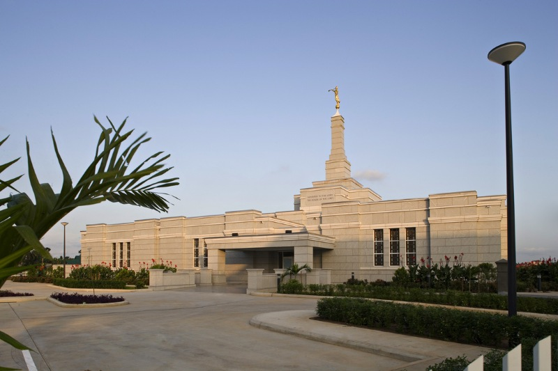
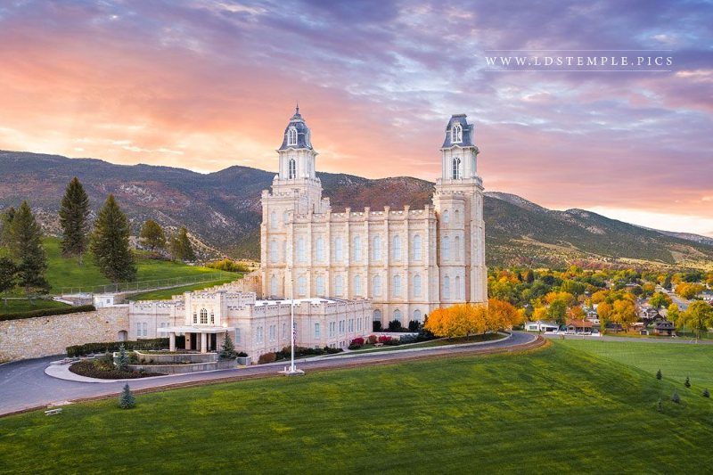
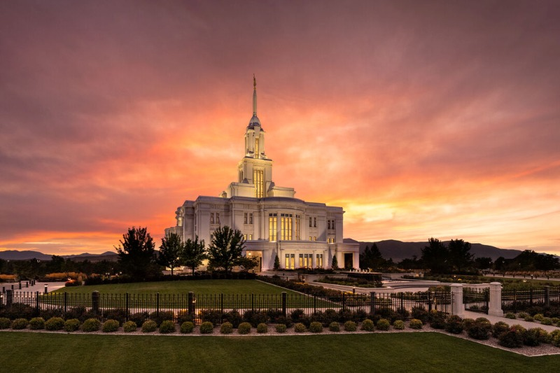
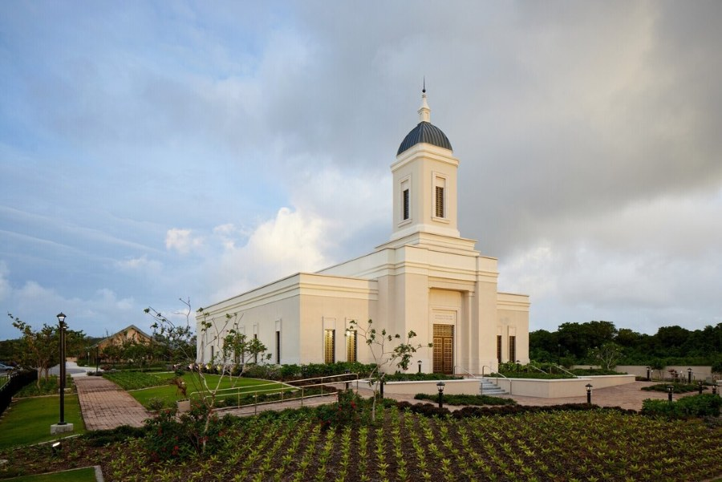
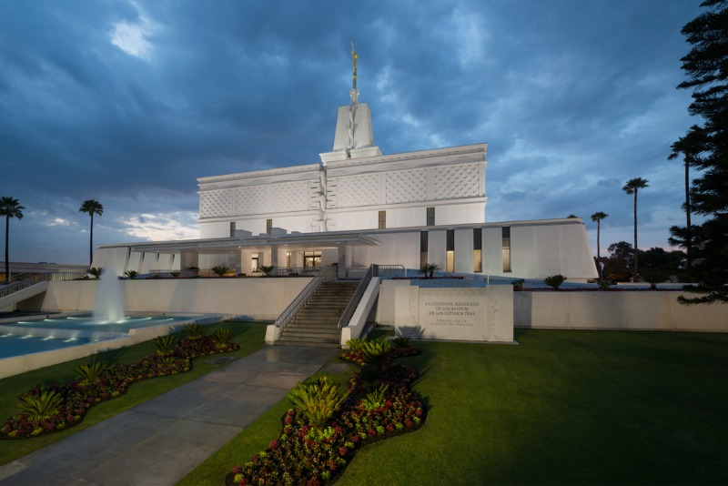
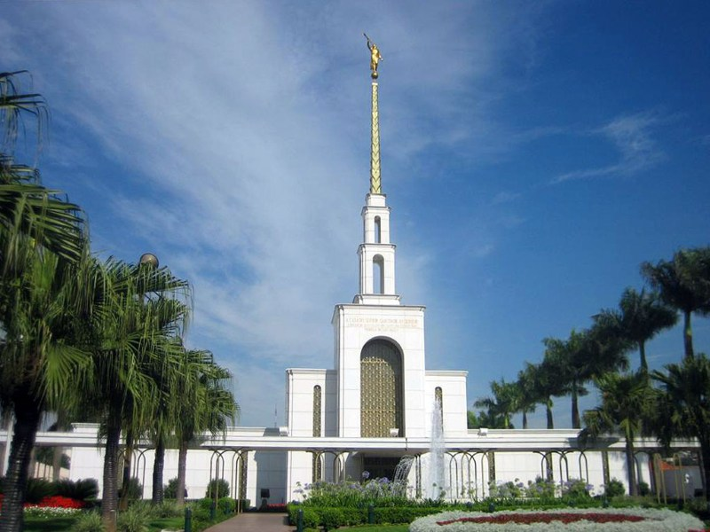
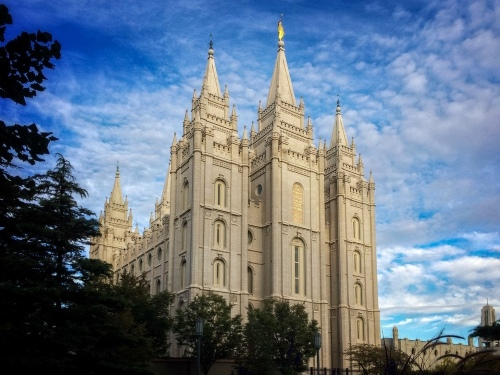
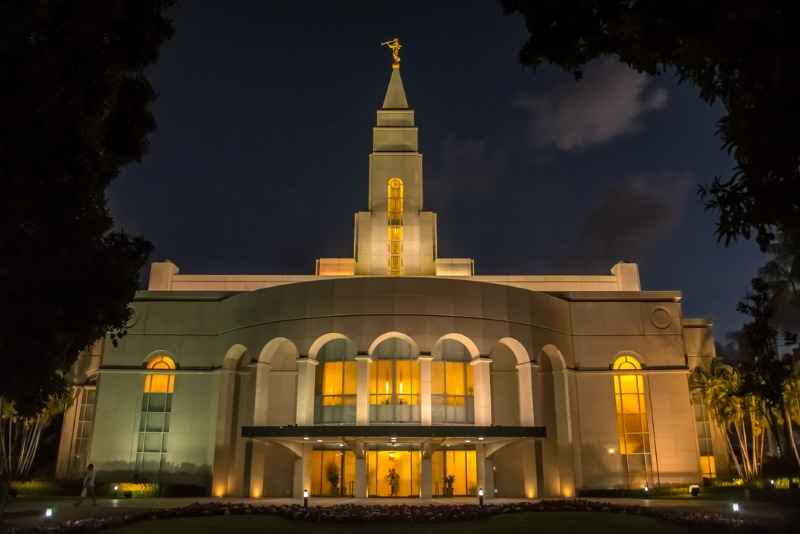

Templo Aba Nigeria
Localização: Aba Nigeria
Data de Consagração: 7 de agosto de 2005
Área Total: 11.500 pés²

Templo Manti, Utah
Localização: Manti, Utah, Estados Unidos
Data de Consagração: 21 de maio 1888
Área Total:74.792 pés²

Templo Payson Utah
Localização: Payson Utah
Data de Consagração: 7 de junho 2015
Área Total: 96,630 pés²

Localização: Payson Utah
Data de Consagração: 7 de junho 2015
Área Total: 96,630 pés²

Templo Yigo Guam
Localização: Yigo Guam
Data de Consagração: 2 de maio 2020
Área Total: 6.861 pés²

Templo Washington D.C
Localização: Washington D.C
Data de Consagração: 19 de novembro 1974
Área Total: 156.558 pés²
Templo Lima Peru
Localização: Lima Peru
Data de Consagração: 10 de janeiro 1986"
Área Total: 9.600 pés²
Templo Cidade de Mexico
Localização: Cidade de Mexico
Data de Consagração: 2 de dezembro 1983
Área Total: 11.6642 pés²

Templo de São Paulo
Localização: São Paulo, Brasil
Data de Consagração: 30 de outubro de 1978
Área Total: 59.246 pés²

Templo de Salt Lake
Localização: Salt Lake City, EUA
Data de Consagração: 6 de abril de 1893
Área Total: 253.015 pés²

Templo de Recife
Localização: Recife, Brasil
Data de Consagração: 15 de dezembro de 2000
Área Total: 25.000 pés²
